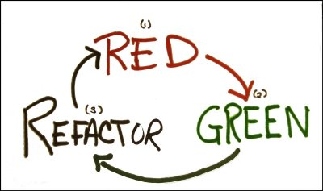

Introduction au Test Driven Development
Jean-François Le Foll / @JeffLeFoll

Le TDD ?
L'objectif ?
Du code propre qui fonctionne - maintenant.Comment ?
Il y a 3 règles simples:
“Ne pas écrire de code de production si ce n'est pour faire passer un test qui échoue.”
“Ne pas écrire plus de ligne de test qu'il ne faut pour échouer. Ne pas compiler est échouer.”
“Ne pas écrire plus de code de production qu'il ne faut pour faire passer avec succès le test.”
Le Mantra du TDD
 Green => Refacto" style="border:0px">
Le refactoring, étape obligatoire
Une règle :
F.I.R.S.T
- Fast
- Independant
- Repeatable
- Self-validating
- Timely
Et ensuite ?
Un peu de code !

Le grand classique du TDD : Le jeu du FizzBuzz
Écrire un programme qui affiche les entiers de 0 à 100.
- Pour les multiples de 3 remplacer le nombre par fizz.
- Pour les multiples de 5 remplacer le nombre par buzz.
- Pour les multiples de 3 et 5 remplacer le nombre par fizzbuzz.